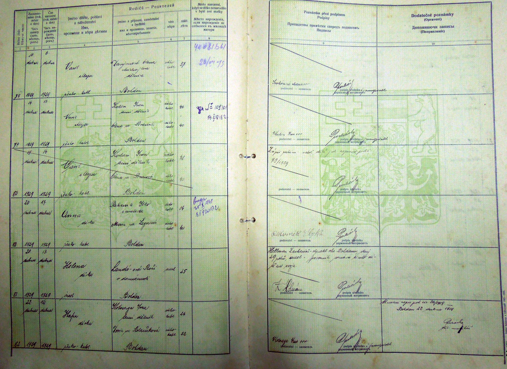
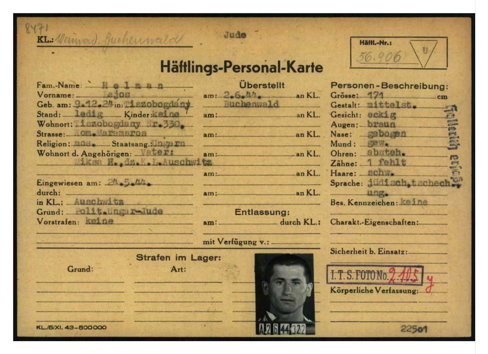
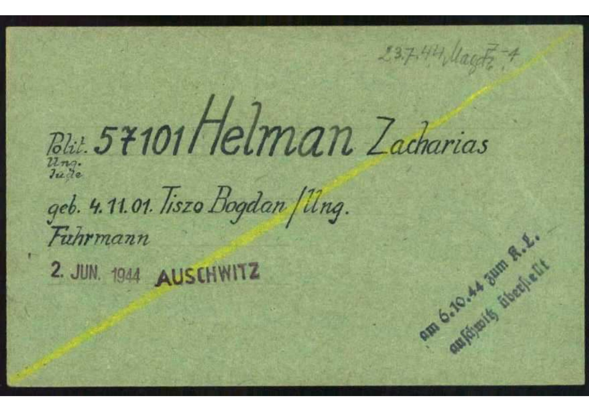
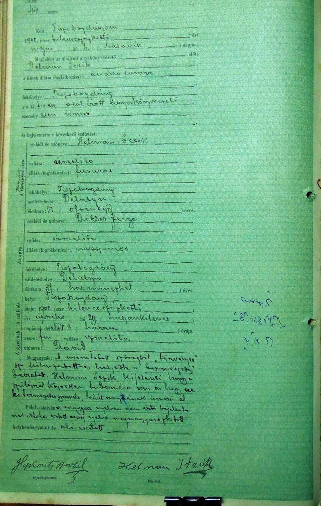
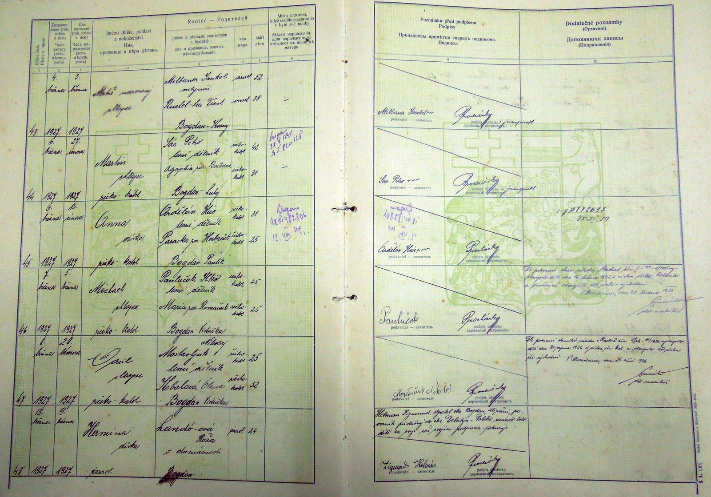
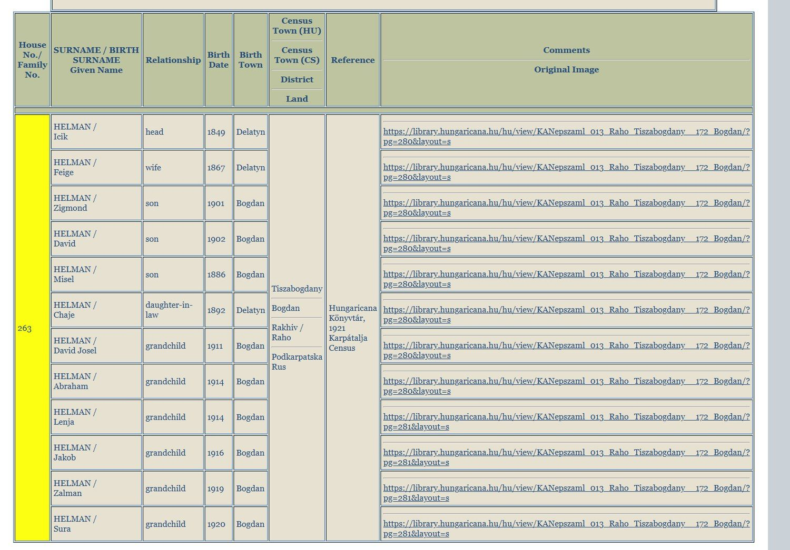

Every document here is reproduced uncropped, with its repository and reference, so that anyone can go and check it.
Helen’s birth record, 1929

Civil birth register, Bohdan. Helen is entry 81, born 13 April 1929, registered on the 20th.
JewishGen Subcarpathia · Fund 1606, Opus 9, Delo 252
ChildHelena, girl, Jewish. No surname is entered.
MotherLandó-ová Rozi, at home, age 25
FatherNamed only in the remarks: Hellman Zacharias, resident of Bohdan, age 29, acknowledging the child as his own
SignedBy the father, in his own hand
What this record shows
Her father is not in the parents column. He is in the margin, as a man attesting that the child is his, and then his name in his own hand. Because the marriage was religious only, the state entered her under her mother’s surname, and so the child has no surname on the page at all.
That single clerical fact is why she could not be found under Helman for eighty years. To trace her, you have to look under Landó.
Buchenwald, 2 June 1944

322 · Lajos HelmanArolsen · 56906323 · Michal HelmanArolsen · 57103324 · Zacharias HelmanArolsen · 57101
Three men of one family, photographed one behind the other at intake, about a week after Auschwitz.
Arolsen Archives, Buchenwald prisoner cards

Zacharias Helman’s card. Top right, the transfer to Magdeburg on 23 July 1944 beside his barrack. Bottom right, in a diagonal hand, transferred to Auschwitz on 6 October. The yellow line across the face is the mark the camp made when a man was sent away.
Arolsen Archives · DocID 6081001
Two generations of the same signature

Civil birth register, Tiszabogdány, page 306, entry 44. David Helman, born 20 April 1902 at three in the morning. Zacharias’s brother.
Fund 1606, Opus 9, Delo 155 · scan purchased from Sub-Carpathia Genealogy
DeclarantHelman Iczik, fuvaros, carter, resident of Tiszabogdány, born in Delatyn, age 51
MotherDikter Faiga, napszámos, day labourer, born in Delatyn, age 37
Remarks“Legitimate” struck out and “natural” entered. Helman Iczik declares he has direct knowledge of the child, that it is his natural child, and acknowledges it as his own.
Closing lineRead aloud to the declarant, who does not understand Hungarian, explained to him in a language he does understand, approved, and signed.
SignedHelman Itzik, in his own hand
What this record shows
Both parents are recorded as born in Delatyn, in Galicia, which is where the paternal family comes from and why every search for them has to reach across a border. Iczik is a carter, the trade that runs down to his sons and grandsons and gives this project its wheel.
And the same two mechanisms that hide the family are already working in 1902. The marriage was religious only, so the state would not recognise it and the father had to acknowledge the child in the margin. The registrar had to have the entry translated because the man signing it could not read the language his own children were being recorded in.

Civil birth register, Bohdan, page 6, entry 48. Hermina, called Hinda, born 9 March 1927. The eldest of the six.
Fund 1606, Opus 9 · scan purchased from Sub-Carpathia Genealogy
MotherLandó-ová Roža, at home, Bogdan, age 24, entered under her maiden name
FatherIn the remarks only: Zigmund Helman, resident of Bogdan, 26, povozník, carter, with right of domicile in Delatyn, Poland, acknowledging the child as his own
SignedZigmund Helman, in his own hand
Why the family could not be found
Zigmund and Zacharias are the same man. He is not in the parents column of his own daughter’s record. He is in the margin, swearing she is his, and then signing. His children are filed under Landó.
This is the pattern, not the exception. It is why searching the surname you were given returns nothing, and why step two of the method is to search the mother’s maiden name as well.
The household, 1921

1921 Czechoslovak census, Bohdan, house 263. Iczik, born 1849 in Delatyn, and Feige, born 1867 in Delatyn, with their sons Misel 1886, Zigmond 1901 and David 1902, Misel’s wife Chaje, and six grandchildren.
Hungaricana, 1921 Karpátalja census · indexed by JewishGen
The line that made them family
Misel is Miksa, and he is Lajos and Michal’s father. One census sheet puts him in the same house as Zigmond, who is Zacharias. That is the document that turns two unknown men on a camp roster into a nephew and a nephew, and their uncle.
Still to be added
The Buchenwald registration forms, the Terezín cards, the Budapest survivor registrations in their own handwriting, the deportation lists under both surnames, and the cemetery stones are prepared and will be added here with their citations.